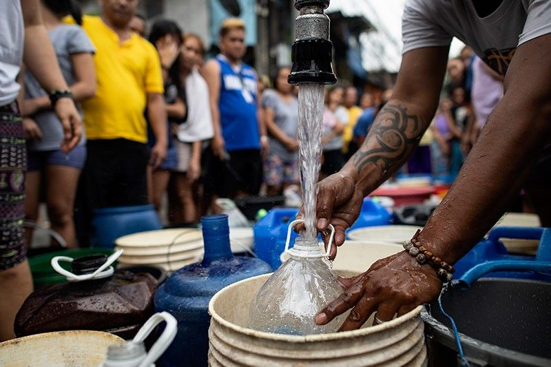
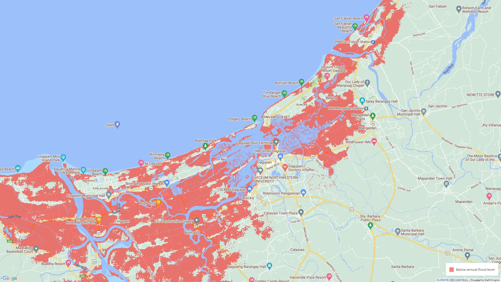
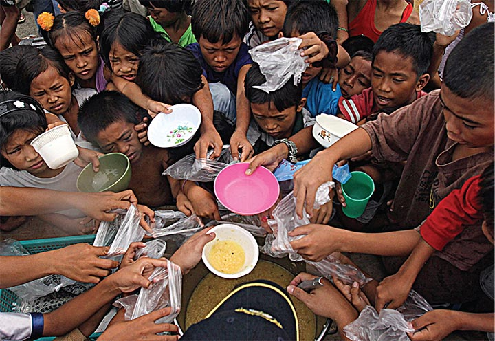

According to the latest IPCC Assessment Report, it was concluded that climate change will add to the poverty in the country between now and 2100. If there is a higher percentage of poverty, there will be more disaster vulnerability, and poor people are the most affected by the life risks of disasters.
A report by PAGASA back in 2011 suggests that there will be a decrease in rainfall in the country except for Luzon. When it comes to extreme rainfall, the number of days with heavy rainfall is expected to increase due to the effects of global warming by the year 2020 to 2050.
The decrease in rainfall and the increase in temperature will result in an extended period of dryness in the country. These opens up many issues, such as water scarcity, health concerns, agriculture issues, etc.
According to PAGASA, the significant decrease in rainfall and more extended drier periods will affect the water amount in watersheds and dams which provide irrigation services to farmers and agricultural workers, especially those in rain-fed areas, which results in a limit in agricultural production.
The sea level rise observed in the country is remarkably highest at 60 centimeters. It is about three times that of the global average of 19 centimeters. A study produced by Climate Central shows that areas are set to be submerged in water by 2050. This will affect around 150 million people currently living in these areas.
The image below shows the land of Dagupan City that could be underwater by 2100. These places (shown in red) will be submerged in water according to the study’s worst-case scenario.
Most Filipino households depend on agriculture for their livelihood and food. Agriculture in the country could be severely affected by the temperature changes accompanied by changes in rain patterns. Because of these, crops will suffer decreases in yields whenever temperatures exceed the threshold values. Additionally, in areas where rain patterns change or when extreme events like floods or droughts happen more often, grain and other agricultural produce could suffer shortfalls without effective and timely interventions. We should also consider the increase in population in the country, so if these issues are not addressed, our future generations will suffer food scarcity.
